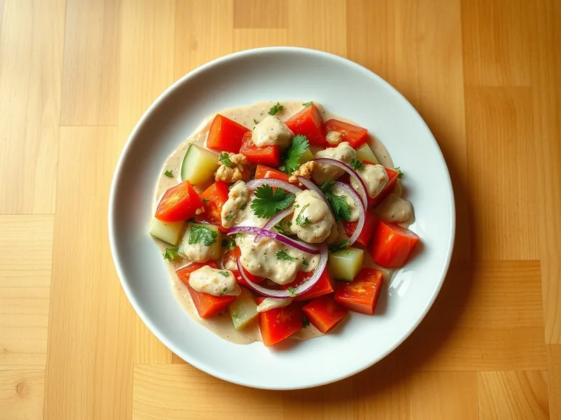

Грузинский салат из помидоров и огурцов с грецкими орехами
Помидоры, огурцы и кинза под густой заправкой из толчёных грецких орехов с чесноком
20 мин4 порц.175 ккал на порциюБ 5 · Ж 13 · У 10Кавказская кухня
Открыть в приложении: порции, таймеры, список покупок
Продукты на 4 порц.
- Помидоры4 шт
- Огурцы2 шт
- Лук репчатый0,5 шт
- Грецкие орехи80 г
- Чеснок2 зуб.
- Кинза20 г
- Уксус 9%2 ч. л.
- Вода40 мл
- Хмели-сунели0,5 ч. л.
- Соль0,7 ч. л.
Как готовить
- Орехи, чеснок и соль измельчите блендером или в ступке до пасты, из которой выступает масло.
- Добавьте уксус, хмели-сунели и тёплую воду, разотрите до густоты сметаны.
- Помидоры нарежьте крупными дольками, огурцы кружками, лук тонкими полукольцами, кинзу порубите.
- Сложите овощи в миску, полейте ореховой заправкой и аккуратно перемешайте прямо перед подачей.
Совет. Ореховую заправку можно сделать заранее и держать в холодильнике 2 дня. Если она загустела, разведите ложкой тёплой воды.